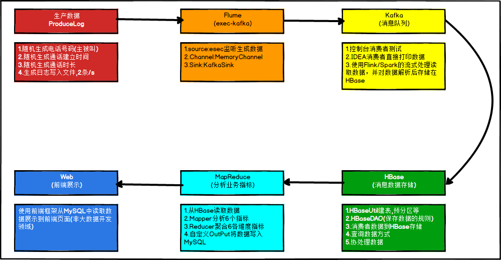
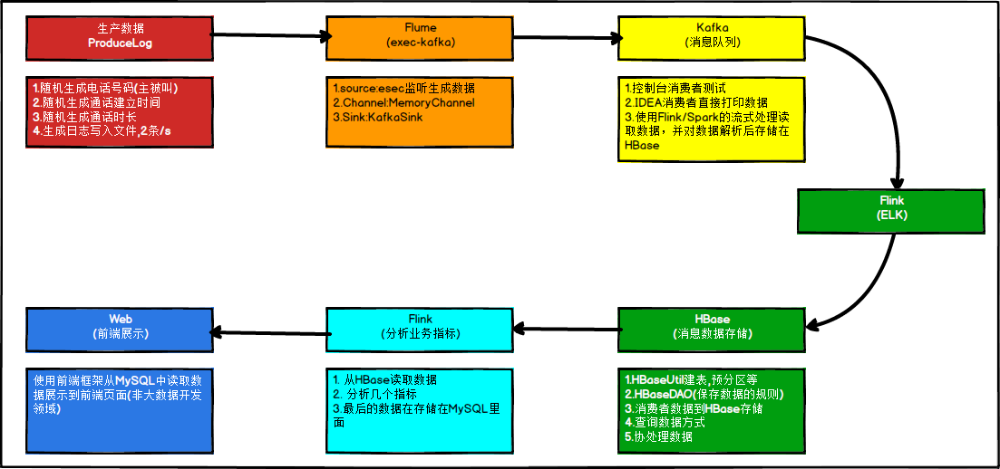

大数据实战开发系列，以实战为主，辅以一些基础知识，关于电信客服，在网上也有很多的资料，这里我自然会去参考网上的资料，程序的整体设计是在今天开始的，老夫尽量在本周末钱结束这个电信客服的程序编写。因为我也是一个学习者，所以在程序编写过程中难免会存在问题，有问题还请大家指出，有则改之，无则加勉。大家共同进步。本教程适合接触大数据开发不久或者还没接触大数据开发，或者小萌新。老鸟就多提意见吧，我改。
博客原文地址：大数据开发实战系列之电信客服(1)
关于项目背景，我就照搬网上的了。通信运营商每时每刻会产生大量的通信数据，例如通话记录，短信记录，彩信记录，第三方服务资费等等繁多信息。数据量如此巨大，除了要满足用户的实时查询和展示之外，还需要定时定期的对已有数据进行离线的分析处理。例如，当日话单，月度话单，季度话单，年度话单，通话详情，通话记录等等+。我们以此为背景，寻找一个切入点，学习其中的方法论。当前我们的需求是：统计每天、每月以及每年的每个人的通话次数及时长。
关于这个项目架构，网上的是用的 MapReduce ， 老夫最近在看 Flink , 因此，我们把这个计算引擎换成 Flink 引擎。先看一下原来的系统架构：

再来看看我这边修改后的：

那我们现在就根据这个流程一步一步来走。
关于大数据的一个平台搭建，我在这里就不做介绍，目前老夫的所有的博客涉及到大数据平台搭建的还是比较少的，我这里贴几个我写过的涉及到平台搭建的几篇博客，是老夫之前写过的：
忘记说了，这里老夫使用的是 Flume 里面的 TailDirSource , 但是在我们设计的时候，使用的是 MemoryChannel , 这个对我们项目本身的测试而言，影响不大。关于 Flume里面的几个 sink , source ,后期我会继续向大家做一个具体的介绍。这里就先留一个疑问，就是TailDirSource和 MemoryChannel 怎么做选择？
这里我们的数据格式，需要确定下：
| 列名 | 解释 | 举例 |
| ------------ | ---------------------------- | -------------- |
| call1 | 第一个手机号码 | 15369468720 |
| call1_name | 第一个手机号码人姓名(非必须) | 李雁 |
| call2 | 第二个手机号码 | 19920860202 |
| call2_name | 第二个手机号码人姓名(非必须) | 卫艺 |
| date_time | 建立通话的时间 | 20171017081520 |
| date_time_ts | 建立通话的时间（时间戳形式） | |
| duration | 通话持续时间（秒） | 0600 |
这是我们的数据格式。
怎么去设计我们的这个数据生产？下面是一个思路，
a).创建Java集合类存放模拟的电话号码和联系人
b).随机选取两个手机号码当作“主叫”与“被叫”（注意判断两个手机号不能重复），产出call1与call2字段数据
c).创建随机生成通话建立时间的方法，可指定随机范围，最后生成通话建立时间，产出date_time字段数据;
d).随机一个通话时长，单位：秒，产出duration字段数据;
e).将产出的一条数据拼接封装到一个字符串中;
f).使用IO操作将产出的一条通话数据写入到本地文件中.
这里，我就不贴程序了，具体的程序可以参考电信客服数据生产
数据采集模块，我们这里采用的是 linux -> flume -> kafka -> flink
数据在我们的本地 Linux系统中生产，由Flume将数据送到 Kafka ， Flink再从我们的Kafka中拿取数据。
这里，安装配置就不多说了，我们启动Kafka前，先启动zookeeper，kafka正常启动后就不用管它了，他只是一个消费通道。现在数据采集的核心是怎么去采集，我们采用的是 Flume , Flume这里也只是需要配置一下，就可以完成我们采集任务：
a1.sources=r1
a1.channels=c1
# configure source
a1.sources.r1.type = TAILDIR
a1.sources.r1.positionFile = /opt/datas/CI123/cidata/flink-telecom-customer-service-posiotion.json
a1.sources.r1.filegroups = f1
a1.sources.r1.filegroups.f1 = /opt/datas/CI123/cidata/flink-telecom-customer-service.log
a1.sources.r1.fileHeader = true
a1.sources.r1.channels = c1
# configure channel
a1.channels.c1.type = org.apache.flume.channel.kafka.KafkaChannel
a1.channels.c1.kafka.bootstrap.servers = hadoop101:9092,hadoop102:9092,hadoop103:9092
a1.channels.c1.kafka.topic = flink-telecom-customer-service
a1.channels.c1.parseAsFlumeEvent = false
a1.channels.c1.kafka.consumer.group.id = flume-consumer我不知道这里的配置要不要讲，简单的讲一下。首先，我们这里只有一个 source和一个channel , 如果有多个就写多个。在我们的source中，他的类型是 TAILDIR ，这个source源有个特点就是支持断点续传，这个断电续传的实现是因为它在做传输的时候，会有一个记录文件，叫做 *.json的位置文件，这个文件是你自己配置的，建议你自己配置好，否则默认文件不知道在哪个旮旯里面。这个 json文件里面记录的就是 flume采集失败的时候最近的那次采集的位置，下次恢复后，再从那个地方采集。接下来就是配置文件位置了，如果我们吧配置了多个源，这里就会有多个文件，最后配置当前的 source 使用的是那个 channel 进行传输。
在 channel 里面，我们使用的是 KafkaChannel ，这个 channel 可以直接把数据送入 kafka 的 topic 里面。所以呢，我们需要配置好 kafka地址，topic 名以及我们的消费者组。这些概念可以参考我上面提供的 Kafka 的入门博文。
关于数据的清洗，目前程序还在编写中，暂时留在下一集我们在聊吧。有喜欢的朋友可以关注我，以后也会不定期的去更新一些内容，也包括自己的一些感受，踩得坑啥的。